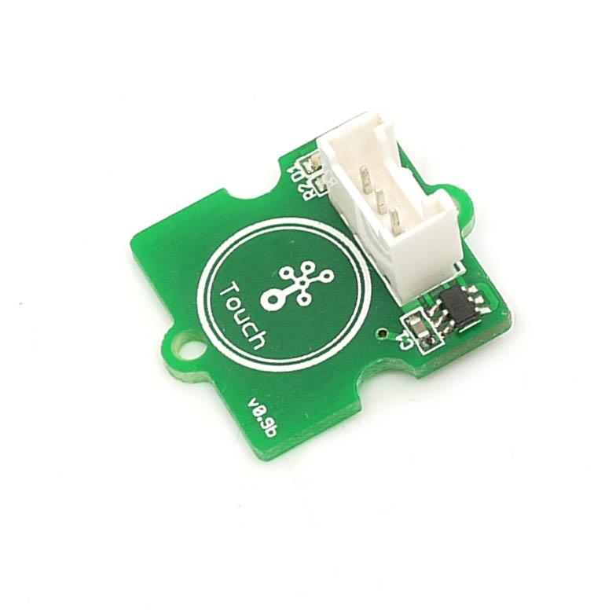
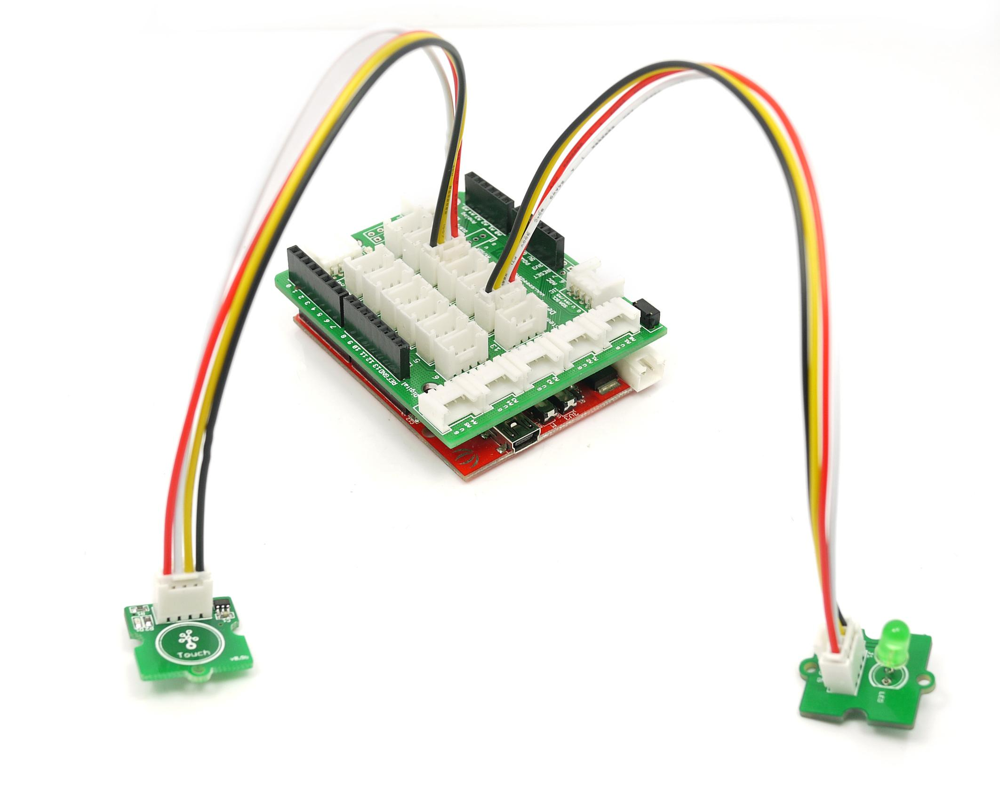

Grove - Touch Sensor enables you to replace press with touch. It can detect the change in capacitance when a finger is near by. That means no matter your finger directly touches the pad or just stays close to the pad, Grove - Touch Sensor would outputs HIGH also.
Operating Voltage: 2.0 - 5.5V
Operating Current(Vcc=3V):1.5 - 3.0μA
Operating Current(VDD=3V):3.5 - 7.0μA
Output Response Time: 60 - 220mS
Used Chipset: TTP223-BA6
| AHLB | TOG | LPMB | MOTB | SLRFTB | RST | Q | OPDO |
|---|---|---|---|---|---|---|---|
| Output Active High / Low | Toggle mode | Power Mode | Max. On Time | Sampling length | RESET PIN | CMOS Output | Open Drain Mode |
| V | V | 0 | 1 | 1 | X | V | X |
| Active High | Disabled | LOW | Infinite | 1.6 msec | N/A | Present | N/A |

This demo is going to show you how to turn on/off an LED.
Demo Code:
const int TouchPin=9; const int ledPin=12; void setup() { pinMode(TouchPin, INPUT); pinMode(ledPin,OUTPUT); } void loop() { int sensorValue = digitalRead(TouchPin); if(sensorValue==1) { digitalWrite(ledPin,HIGH); } else { digitalWrite(ledPin,LOW); } }
1.You should have got a raspberry pi and a grovepi or grovepi+.
2.You should have completed configuring the development enviroment, otherwise follow here.
3.Connection
4.Navigate to the demos' directory:
cd yourpath/GrovePi/Software/Python/
nano grove_touch_sensor.py # "Ctrl+x" to exit #
import time
import grovepi
# Connect the Grove Touch Sensor to digital port D4
# SIG,NC,VCC,GND
touch_sensor = 4
grovepi.pinMode(touch_sensor,"INPUT")
while True:
try:
print grovepi.digitalRead(touch_sensor)
time.sleep(.5)
except IOError:
print "Error"
5.Run the demo.
sudo python grove_touch_sensor.py